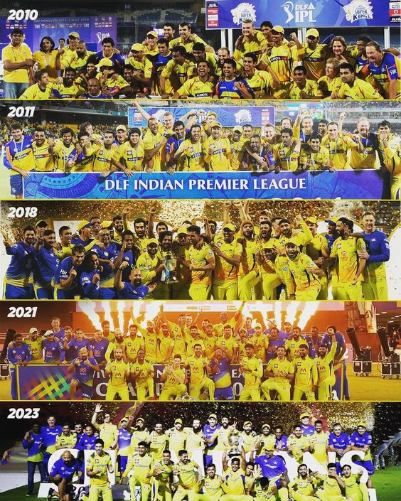

LOGIN
Champions
The Chennai Super Kings (CSK) have won the Indian Premier League (IPL) five times, in 2010, 2011, 2018, 2021, and 2023, making them the joint-most successful team in the competition. They have also made the IPL finals a record 10 times and qualified for the playoffs in 12 out of 14 seasons, making them the most consistent team in the tournament's history.

Upcoming Events
Chennai Super Kings
Chennai Super Kings (CSK) is an Indian professional cricket franchise based in Chennai, Tamil Nadu. The team competes in the Indian Premier League (IPL) and was one of the eight franchises incorporated when the league was established in 2008. The team plays its home matches at the M. A. Chidambaram Stadium in Chennai and is owned by Chennai Super Kings Cricket Limited.

Photo Gallery
The Chennai Super Kings (CSK) are an Indian Premier League (IPL) cricket team based in Chennai. They have won the IPL five times, in 2010, 2011, 2018, 2021, and 2023, which is tied with the Mumbai Indians for the most wins in the competition. CSK have also finished as runners-up five times, more than any other team.

The Chennai Super Kings (CSK) are an Indian Premier League (IPL) cricket team that was founded in 2008 and plays its home matches at the M. A. Chidambaram Stadium in Chennai. The team is owned by India Cements, and its chairman is N. Srinivasan, the former president of the BCCI and chairman of the ICC.
The Indian Premier League (IPL), also known as the TATA IPL for sponsorship reasons, is a men's Twenty20 (T20) cricket league held annually in India. Founded by the BCCI (the Board of Control for Cricket in India) in 2007, the league features ten state or city-based franchise teams. The IPL usually takes place during the summer, between March and May each year. It has an exclusive window in the ICC Future Tours Programme, resulting in fewer international cricket tours occurring during the IPL seasons
INDIAN PREMIER LEAGUE
The prize money received will be equally distributed among all the players of the team. The winning team will get 200 million INR for winning the IPL. The first and second runner up teams will get around 125 million and 80 million INR respectively.
IPL Winner and Runner Up List
IPL Winners List has been listed below for the readers along with the runner-up and the venues. Let’s have a look at the table of IPL Winners List from 2008 to 2024.
| Year | Winner | Runner up |
| 2010 | chennai-super-kings | Mumbai Indians |
| 2011 | chennai-super-kings | Royal Challengers Bangalore |
| 2018 | chennai-super-kings | Sunrisers Hyderabad |
| 2021 | chennai-super-kings | Kolkata Knight Riders |
| 2023 | chennai-super-kings | Gujarat Titans |